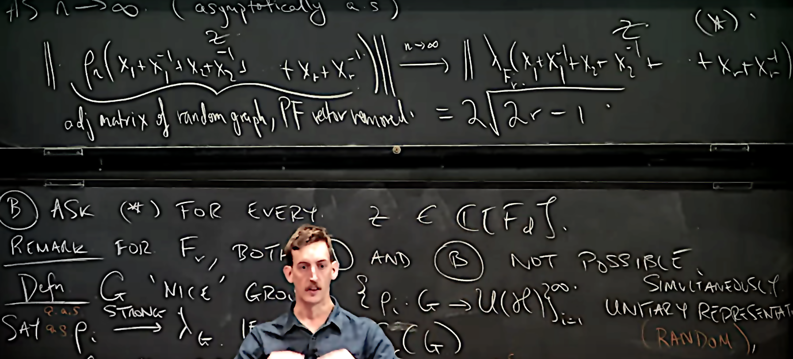

Michael Magee

NEWS
With Urban Jezernik and Aleksey Kostenko we are organizing
Spectral Gaps 2025 in Portorož, Slovenia (8 - 12 September 2025).
This is a sequel to Spectral Gaps 2023.
*REGISTRATION OPEN*
Spectral Gaps 2025 in Portorož, Slovenia (8 - 12 September 2025).
This is a sequel to Spectral Gaps 2023.
*REGISTRATION OPEN*
About me
I'm a Professor of Mathematics at Durham University.
Right now, I am thinking about (in no particular order)
unitary and permutation representations of discrete groups (strong convergence thereof)
the representation theory of symmetric groups
hyperbolic 2 and 3-manifolds and their spectral gaps
a variety of topics related to the reduced C*-algebras of groups.
I am from Northern Ireland.
Right now, I am thinking about (in no particular order)
unitary and permutation representations of discrete groups (strong convergence thereof)
the representation theory of symmetric groups
hyperbolic 2 and 3-manifolds and their spectral gaps
a variety of topics related to the reduced C*-algebras of groups.
I am from Northern Ireland.
Contact
email: michael(dot)r(dot)magee(AT)durham(dot)ac(dot)uk
Current PhD students
Ewan Cassidy (2021-2025) Topic: Representation theory and Weingarten calculus for symmetric groups
Anitej Banerjee (2022-2026)
Anitej Banerjee (2022-2026)
Current postdocs
Joe Thomas
Past postdocs
Irving Calderón
Completed PhD students
Will Hide (2020-2024) Topic: Spectral theory of random cusped hyperbolic surfaces
website hit counter